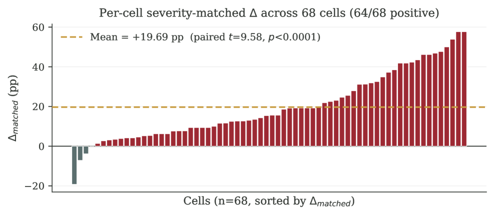
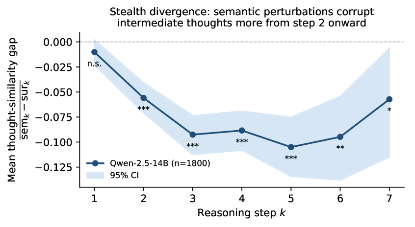
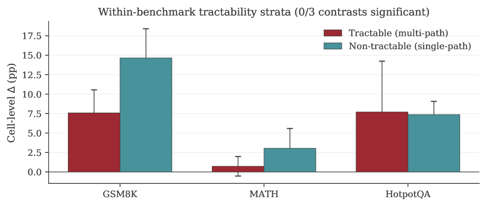
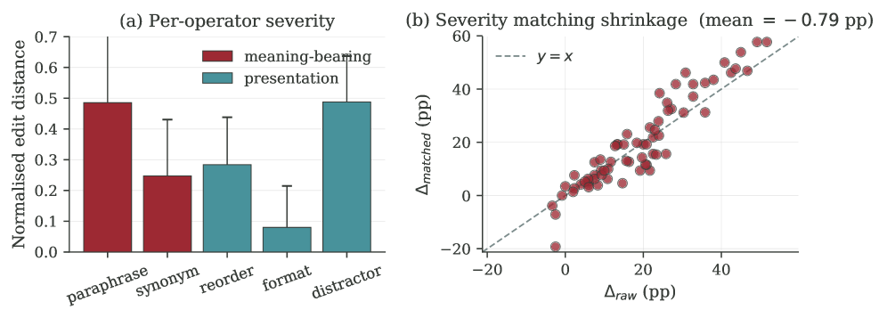

This paper provides a rigorous measurement study showing that LLM agents are systematically more sensitive to semantic noise than surface noise, with a held-out replication and trace-level mechanism analysis.
本文通过严格的测量研究，系统揭示了LLM智能体对语义扰动（如释义、同义词替换）的敏感性显著高于对呈现扰动（如格式调整、选项重排）的敏感性，并在严重性匹配、生成器交换、裁判交换等多重压力测试下保持稳健。研究还通过留出模型验证和轨迹级分析，发现了“隐性分歧”机制——语义噪声从推理第二步起即逐步破坏中间推理过程。
Deep Note — agentdiff-noise
Key Takeaways - Semantic perturbations (paraphrase, synonym) cause final-answer changes 19.69 pp more often than presentation perturbations (formatting, reordering) after severity matching across 68 cells. - The gap survives four severity-proxy audits and remains significant when excluding qwen models (+11.10 pp). - Held-out validation on qwen2.5-14B-Instruct (1,800 trajectories) confirms the effect; trace-level analysis reveals a 'stealth-divergence' mechanism where semantic noise corrupts intermediate reasoning from step 2 onward. - Two prior mechanism claims fail to replicate and are retracted; cross-architecture generator swaps destroy per-cell rankings (Spearman ρ=+0.14). - A second LLM judge yields only moderate agreement (Cohen's κ=0.50), indicating unbiased but limited judge reliability.
0) Metadata
- Title: When Do LLM Agents Treat Surface Noise Differently from Semantic Noise? A 68-Cell Measurement Study with a Held-Out Trace-Level Validation
- Alias: agentdiff-noise
- Authors: Liyun Zhang, Jiayi Guo
- arXiv ID: 2605.25981
- Published:
- Links:
- Abs: https://arxiv.org/abs/2605.25981
- HTML: https://arxiv.org/html/2605.25981v1
- PDF: https://arxiv.org/pdf/2605.25981
- Tags: llm-agents, perturbation-robustness, semantic-noise, chain-of-thought, measurement-study
- Domains: system_safety
- Rating: 5/5 (base 1 + quality 2 + observation 2)
1) Why-read
This paper provides a rigorous measurement study showing that LLM agents are systematically more sensitive to semantic noise than surface noise, with a held-out replication and trace-level mechanism analysis.
2) CRGP
C — Context
Prior work on perturbation robustness has focused on single-step models or classifiers, not multi-step agents. Agent benchmarks measure raw success rate, not perturbation sensitivity. Prompt formatting alone can shift accuracy by tens of points, motivating the need to understand how different noise types propagate through agent reasoning.
R — Related work
- PromptBench (Zhu et al., 2024) studies perturbation operators on classification/generation models but does not separate meaning-bearing vs. presentation gaps or study agent trajectories.
- CheckList (Ribeiro et al., 2020) defines behavioral categories for classifiers, not agents with tool use.
- AgentBench (Liu et al., 2024) and AgentBoard (Ma et al., 2024) measure end-to-end success, not perturbation sensitivity.
- GSM-Symbolic (Mirzadeh et al., 2025) measures accuracy drops under template-level paraphrase on multi-step reasoning, but does not compare directional gaps or perform severity matching.
G — Gap
No prior work has systematically measured whether LLM agents treat meaning-bearing perturbations differently from presentation perturbations of comparable severity, nor has any study subjected such a gap to severity matching, generator swaps, judge swaps, and held-out validation. The methodological question of robustness to these confounds remains unanswered.
P — Proposal
The authors conduct a 68-cell measurement study across 10 LLMs, 3 benchmarks, and 2 scaffolds, applying 5 perturbation operators (2 semantic, 3 presentation) and recording final answers and full trajectories. They perform severity matching, stress tests (cluster bootstrap, generator swap, judge swap), and validate on a held-out 11th model with 1,800 trajectories, probing trace-level mechanism signals to identify a 'stealth-divergence' pattern.
---
4) Experiments
Main results
Across 68 cells (1,530 originals, ~11,150 variants), severity-matched inconsistency gap averages +19.69 pp (paired t=9.58, p<0.0001; 64/68 positive). Gap survives four severity proxies (edit distance, token Jaccard, Sentence-BERT cosine, length-change ratio) at p<0.0001. On 48 non-qwen cells: +11.10 pp (p<0.0001). Held-out validation on qwen2.5-14B-Instruct: 3/4 cells positive, pooled Welch t=3.81, p=9.6e-4. Trace-level: per-step similarity gap -5.6 to -10.5 pp from step 2 onward; cascade depth +0.17 steps (paired t=7.69, p=2.5e-14).
Ablation
Excluding qwen models reduces the gap from +19.69 pp to +11.10 pp (still p<0.0001), showing the effect is not driven by a single family. Cross-architecture generator swap destroys per-cell ranking (Spearman ρ=+0.14), while within-family swap preserves it (ρ=+0.71). Wild cluster bootstrap at K=10 and K=7 is non-significant, indicating limited cluster-level identification.
Limitations
Wild cluster bootstrap fails to reach significance at small cluster counts (K=10, K=7), limiting cross-benchmark heterogeneity claims. The second LLM judge shows only moderate agreement (κ=0.50), suggesting answer evaluation is noisy. The held-out validation uses only one model (qwen2.5-14B-Instruct), so generalizability to other architectures is not fully established.
5) Why it matters
- Provides a rigorous methodology for measuring perturbation sensitivity in agents, including severity matching and multiple stress tests that can be adopted in your own evaluations.
- Reveals that semantic noise propagates through intermediate reasoning steps (stealth-divergence), which has implications for input normalization and adversarial robustness in deployed agents.
- Demonstrates the importance of held-out validation and honest reporting of non-significant stress tests, setting a standard for empirical work in agent robustness.
6) Next steps
- [ ] Apply the severity-matching and stress-test framework to your own agent pipelines (e.g., tool-use, multi-hop QA) to measure perturbation sensitivity.
- [ ] Investigate whether stealth-divergence generalizes to other model families and task types beyond math and QA.
- [ ] Design input normalization strategies that specifically target semantic perturbations (e.g., paraphrase detection, synonym grounding) based on the finding that they cause deeper reasoning corruption.
7) Scoring
5/5 = base 1 + quality 2 + observation 2
LLM智能体何时对表面噪声与语义噪声表现出不同敏感性？一项68单元测量研究与留出轨迹级验证
主要结论 - 语义扰动导致最终答案变化的概率比呈现扰动高19.69个百分点（严重性匹配后），在68个实验单元中64个为正效应。 - 该差距在四种严重性代理指标下均显著，排除qwen模型后仍达+11.10个百分点。 - 留出验证（qwen2.5-14B-Instruct，1800条轨迹）确认了该效应；轨迹级分析揭示了“隐性分歧”机制：语义噪声从第二步起即逐步破坏中间推理。 - 两项先前声称的机制无法复现并被撤回；跨架构生成器交换会破坏单元级排名（Spearman ρ=+0.14）。 - 第二个LLM裁判仅达到中等一致性（Cohen's κ=0.50），表明裁判可靠性有限但无偏。
1) 阅读理由
本文提供了严格的测量研究，证明LLM智能体对语义噪声的系统性敏感性高于表面噪声，并包含留出复制和轨迹级机制分析。
2) CRGP（背景 / 相关工作 / 差距 / 方案）
背景：先前关于扰动鲁棒性的研究集中于单步模型或分类器，而非多步智能体。智能体基准测试仅测量原始成功率，而非扰动敏感性。仅提示格式就能使准确率波动数十个百分点，这促使我们理解不同噪声类型如何通过智能体推理传播。
相关工作：PromptBench (Zhu et al., 2024) 研究了分类/生成模型上的扰动算子，但未区分意义承载与呈现差距，也未研究智能体轨迹。CheckList (Ribeiro et al., 2020) 为分类器定义了行为类别，而非使用工具智能体。AgentBench (Liu et al., 2024) 和 AgentBoard (Ma et al., 2024) 测量端到端成功率，而非扰动敏感性。GSM-Symbolic (Mirzadeh et al., 2025) 测量了多步推理中模板级释义下的准确率下降，但未比较方向性差距或进行严重性匹配。
差距：尚无工作系统测量LLM智能体是否对意义承载扰动与呈现扰动（在可比严重性下）表现出不同敏感性，也没有研究对这种差距进行严重性匹配、生成器交换、裁判交换和留出验证。关于这些混杂因素鲁棒性的方法论问题仍未解答。
方案：作者进行了68单元测量研究，涵盖10个LLM、3个基准和2个脚手架，应用5种扰动算子（2种语义、3种呈现），记录最终答案和完整轨迹。他们进行了严重性匹配、压力测试（聚类bootstrap、生成器交换、裁判交换），并在留出的第11个模型上用1800条轨迹进行验证，探测轨迹级机制信号以识别“隐性分歧”模式。
3) 实验
在68个实验单元（1530个原始样本，约11150个变体）中，严重性匹配后的不一致性差距平均为+19.69个百分点（配对t=9.58，p<0.0001；64/68为正）。该差距在四种严重性代理指标（编辑距离、token Jaccard、Sentence-BERT余弦、长度变化比）下均显著（p<0.0001）。在48个非qwen单元中：+11.10个百分点（p<0.0001）。留出验证（qwen2.5-14B-Instruct）：3/4单元为正，合并Welch t=3.81，p=9.6e-4。轨迹级：从第二步起，每步相似性差距为-5.6至-10.5个百分点；级联深度增加0.17步（配对t=7.69，p=2.5e-14）。
消融实验
排除qwen模型后，差距从+19.69个百分点降至+11.10个百分点（仍p<0.0001），表明该效应并非由单一模型族驱动。跨架构生成器交换破坏了单元级排名（Spearman ρ=+0.14），而族内交换保留了排名（ρ=+0.71）。在K=10和K=7下的Wild聚类bootstrap不显著，表明聚类级识别能力有限。
局限性
Wild聚类bootstrap在小聚类数（K=10, K=7）下未能达到显著性，限制了跨基准异质性声称。第二个LLM裁判仅达到中等一致性（κ=0.50），表明答案评估存在噪声。留出验证仅使用一个模型（qwen2.5-14B-Instruct），因此对其他架构的泛化性尚未完全确立。
4) 重要性
- 提供了测量智能体扰动敏感性的严格方法论，包括严重性匹配和多重压力测试，可应用于你自己的评估。
- 揭示了语义噪声通过中间推理步骤传播（隐性分歧），这对部署智能体中的输入归一化和对抗鲁棒性具有启示。
- 展示了留出验证和诚实报告非显著压力测试的重要性，为智能体鲁棒性的实证工作树立了标准。
5) 下一步
- [ ] 将严重性匹配和压力测试框架应用于你自己的智能体管道（例如工具使用、多跳问答），以测量扰动敏感性。
- [ ] 研究隐性分歧是否泛化到其他模型族和任务类型（超越数学和问答）。
- [ ] 基于语义扰动导致更深层推理破坏的发现，设计专门针对语义扰动的输入归一化策略（例如释义检测、同义词接地）。



